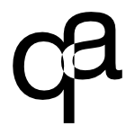

aurqt
A graphical AUR manager.

Details
| Status | Inactive |
| Language | Python |
| License | 3-clause BSD |
| Role | Maintainer |
aurqt is a desktop graphical interface to the AUR. It leverages the power of the AUR API and the Web interface.
aurqt depends on PKGBUILDer for most features.
aurqt should be installed from the AUR itself, by installing the aurqt package:
pkgbuilder -S aurqt
The project is partially abandoned and may not work properly.